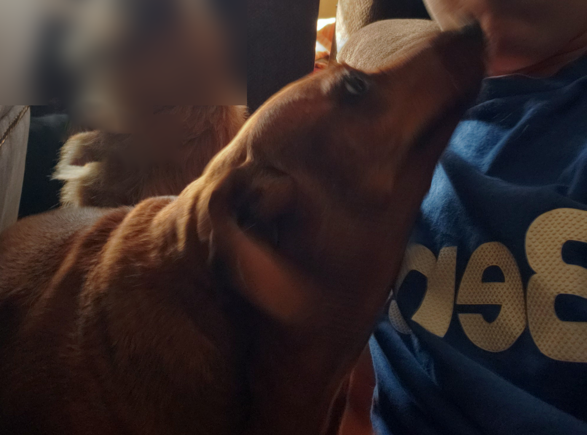

Xirtam 3
JihadiJackass Studios Key Projects
Formable Nations: Reworked Information Guide Available Here
(NOT COMPLETED AS OF 2025-11-29)
A complete overhaul of the formable nations system in Europa Universalis V — expanding gameplay options and reworking formation decisions. Most nations are unique and some have special content. This mod is a recreation of an old outdated mod and has far surpassed any content that it provided.
Formable Nations: Reworked Information Guide Available Here
Still unfinished & outdated - EU5 is the priority now.
A complete overhaul of the formable nations system in Europa Universalis IV — expanding gameplay options and reworking formation decisions. Most nations are unique and some have special content. This mod is a recreation of an old outdated mod and has far surpassed any content that it provided.


A modern remaster of a classic flash game which allows co-op, custom maps, classic and generative campaigns, as well as other improvements.
A complete overhaul and improvement of Pokemon Explorers of Sky written in Python, Javascript, and built as a full independent game - Entirely free to use.

Rest in Peace Bella 🙏
2011-2023